{kind=link}
A 10 Watt LED, Arduino, nerd, and laser cutter's powers combined to form: Stroboscope!
What?
A strobe that scopes.
| 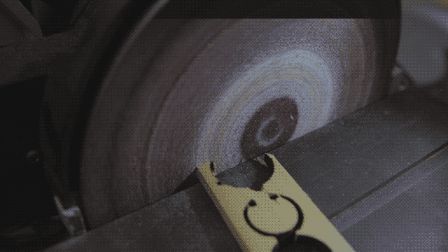 |
| Magical sander |
{kind=link}
| Party Engineers |
{kind=link}
Download
Video Overview
Why?
Sometimes other tools won't cut it. On the set of ABC's BattleBots season 2, Minotaur kept flinging the reflective stickers off used for laser tachometer readings. It was safer and more reliable to use the stroboscope.
Here is the expensive stroboscope I was using, and the inspiration for this build.
| 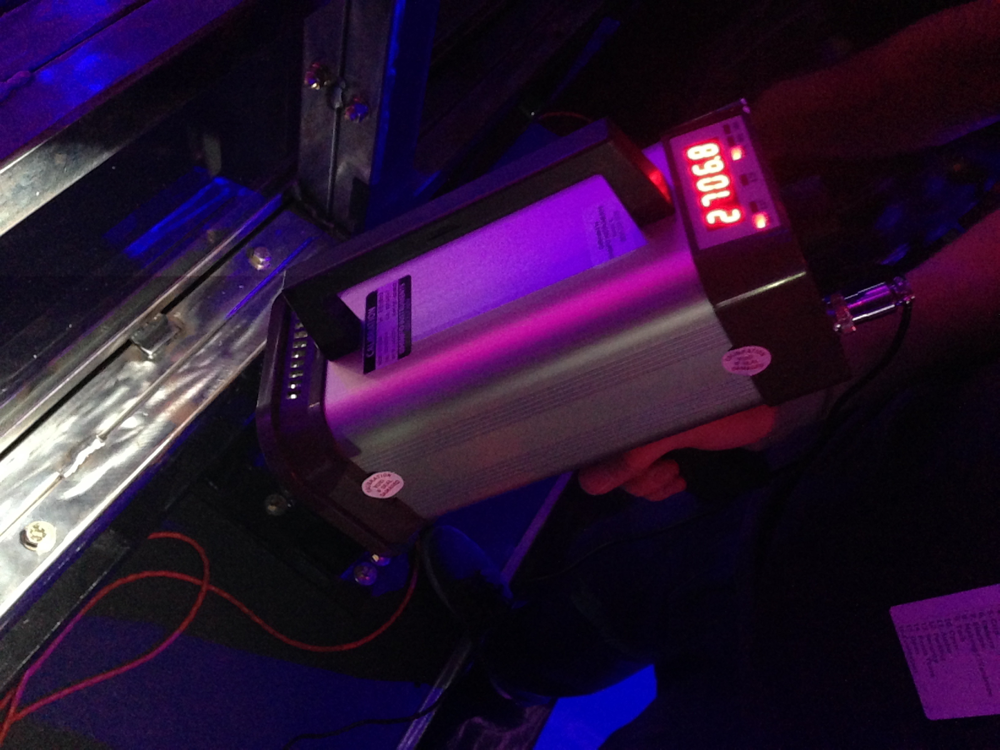 |
| Real Stroboscope |
{kind=link}
So I could blog about it.
Design
My starting point was a cheap Chinese "10 watt" LED I had laying around. They are rated for 900 mA at ~11v.
| 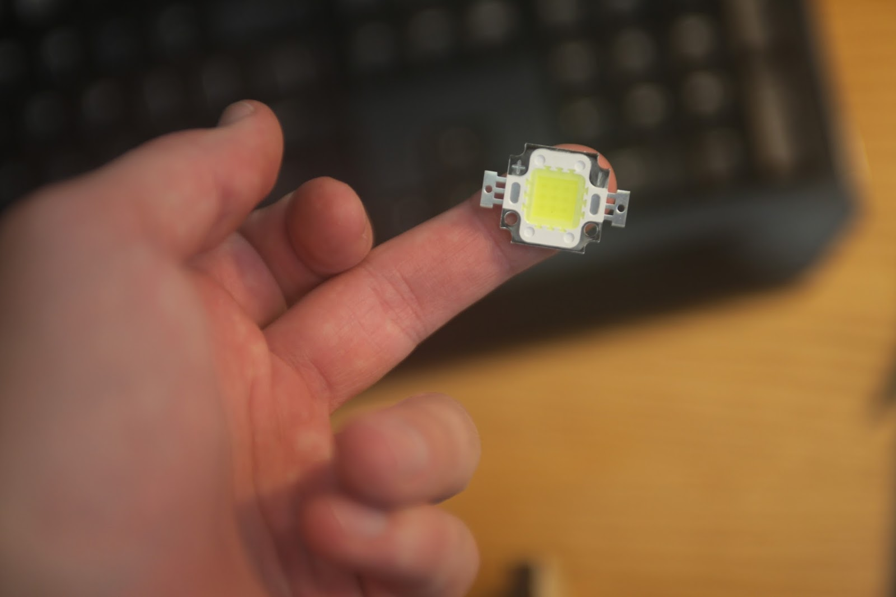 |
| Sorry about the finger |
{kind=link}
Mechanicals
First I created the enclosure in SolidWorks.| 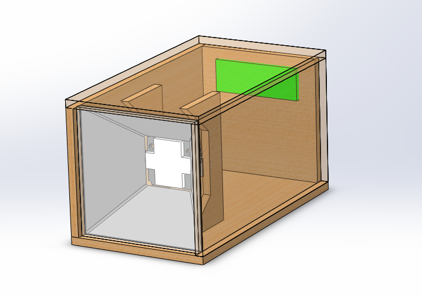 |
| Early box |
{kind=link}
My original plan was to power the stroboscope with a big 26650 Li-ion battery, so I left plenty of room.
| 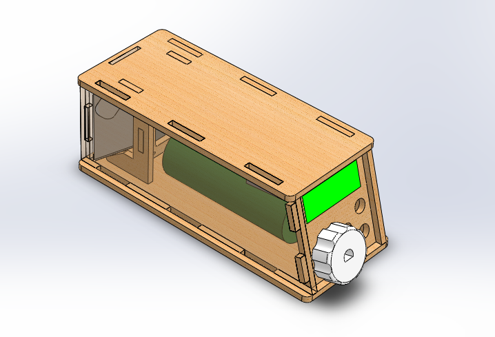 |
| Less early box |
{kind=link}
This is the nearly completed stroboscope model.
| 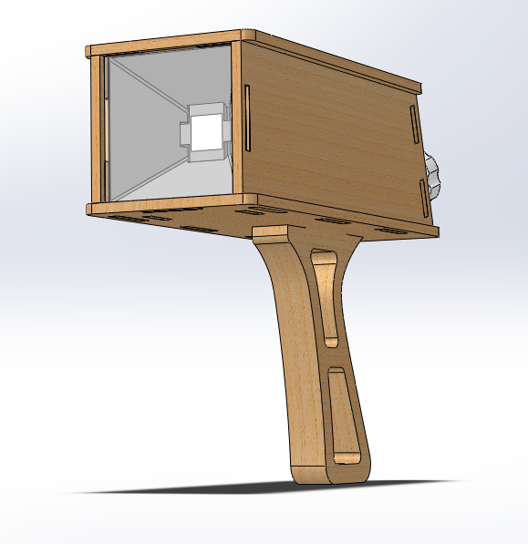 |
| Later box with handle |
{kind=link}
At this point I need to decide how everything holds together: bolts, glue, or magic.
I chose magic.
Now all the parts fits together like an interlocking puzzle.
| 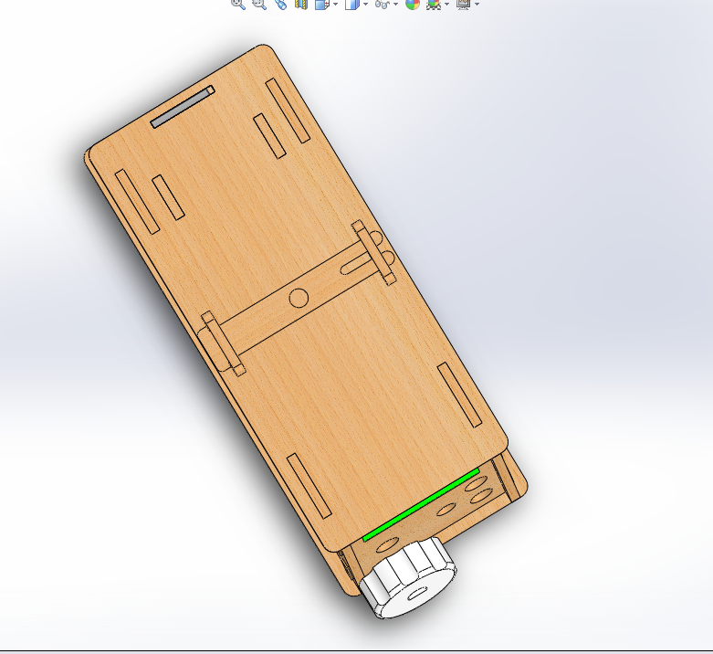 |
| Wooden pin |
{kind=link}
| 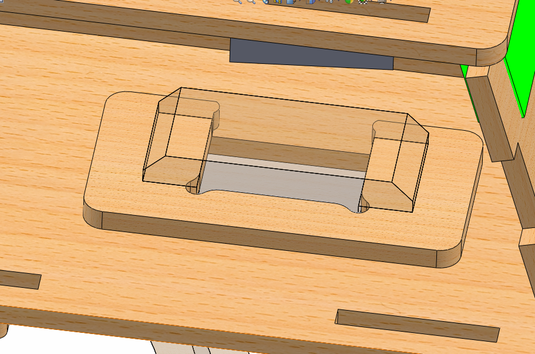 |
| Handle clip. |
{kind=link}
To the laser!
 |
| Laser cutting the acrylic window |
Away from the laser!
| 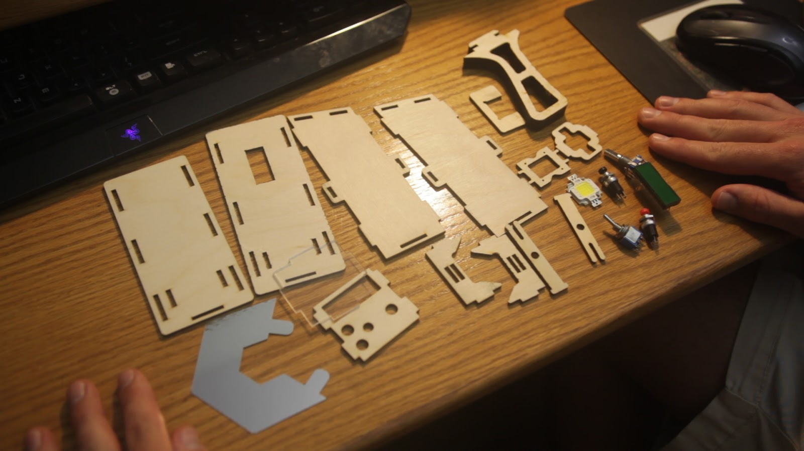 |
| Pile of parts |
{kind=link}
If you want to see the assembly, watch the video....
| 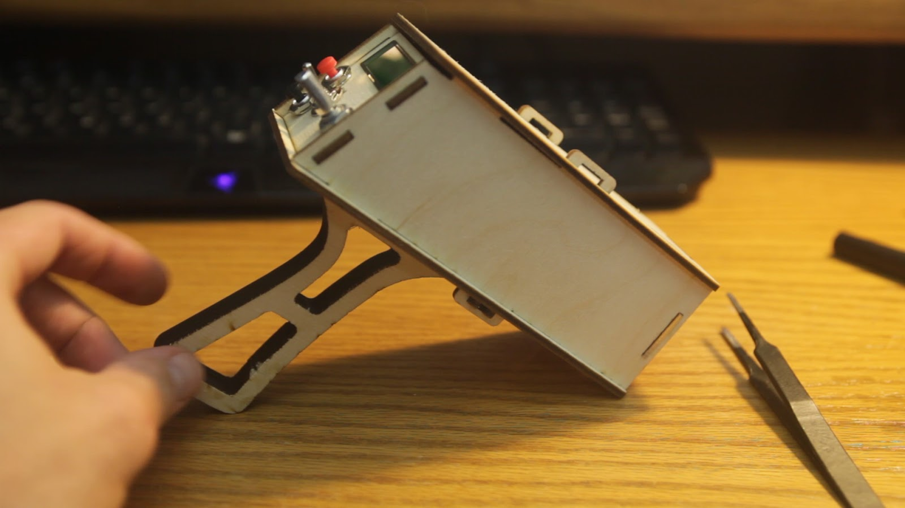 |
| Test fit |
{kind=link}
Electricals
I am going to overcurrent the living daylight out of this LED, squeezing out all its photons for short pulses. My current (electrical) measurement setup consists of two 1 ohm resistors in parallel as a shunt, and my incredibly shitty Hantek 6022BE USB oscilloscope.
Give me a second to complain about the Hantek 6022BE.
Holy crap it's bad..
Not the scope itself, but the PC software to use it. It works just well enough to function, but has enough bugs to drive you insane. If you need a scope and are set on the Hantek 6022BE, it better be your last $100.
Here's my test setup. The LED is driven with a mosfet and bjt and Arduino Pro Mini.
It survived 11 amps for 100 microsecond pulses without blowing up. That's over 10x the rated current! It could probably take more, but I only had one replacement.
As of writing this, I've bought 20 more of these LEDs with the intention of blowing them up to find a limit.
Next I began assembling the circuit board. The microprocessor is an Arduino Pro Mini, and I'm using a boost converter to generate 20v for the LED.
Everything works great until I turn the LED on. The RPM value keeps incrementing on it's own.
You see, the transistors I used were transistors I found laying around: an N channel mosfet and NPN bjt to saturate the mosfet. This means the input to turn the LED on is inverted while my LED is overvolted. A recipe for disaster.
This is really stupid fix for a really stupid problem. The simple explanation is the microprocessor needs to be on to keep the LED off. When power is cut, the energy in the capacitors keeps everything running for a short while. If the 5v for the Arduino dies before the 20v of the LED, the mosfet will turn on and dump the remaining energy which is probably enough to destroy the LED. Instead of buying the right transistors, I wired the LED power through the toggle switch. The large current pulsing through those wires induces current in the surrounding wires. One of those wires is connected to an external interrupt on the Arduino which responds very quickly to changes in voltage.
Twisting the wires didn't help. Shielding the wires didn't help. I ended up putting a large capacitor next to the mosfet with a 5k bleed resistor and a large capacitor on the Arduino 5v supply. This is a dirty hack which fixed the problem.
When the stroboscope is turned off, the bleed resistor begins draining the capacitor, and the Arduino stays on longer due to the other capacitor. By the time the Arduino runs out of power, the other capacitor has been drained enough to not damage the LED.

And then I fried the Arduino somehow.
A 9v battery wasn't enough so I swapped it with a 3s lipo. The firmware is done and everything works!
The user controls the RPM using the encoder dial. The buttons divide and multiply the RPM value by two; for large RPM adjustments and finding harmonics.
Explaining the use of a stroboscope isn't as easy as I thought. When the stroboscope is tuned to the correct frequency, the LED flashes at the same point in the cycle you're measuring. However it's easy to be fooled. Strobing less than once a cycle looks exactly the same, and the first harmonic of symmetrical systems looks the same.
If this wikipedia gif isn't enough, watch the overview video; I try to explain it with some animations.
Holy crap it's bad..
Not the scope itself, but the PC software to use it. It works just well enough to function, but has enough bugs to drive you insane. If you need a scope and are set on the Hantek 6022BE, it better be your last $100.
| 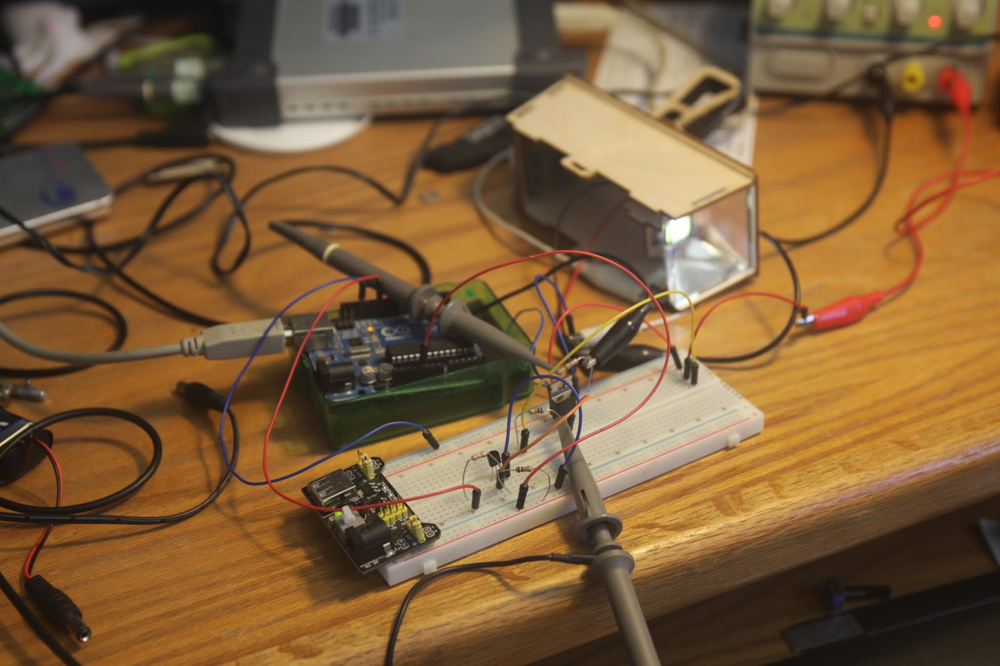 |
| LED overcurrent tests |
{kind=link}
As of writing this, I've bought 20 more of these LEDs with the intention of blowing them up to find a limit.
Next I began assembling the circuit board. The microprocessor is an Arduino Pro Mini, and I'm using a boost converter to generate 20v for the LED.
| 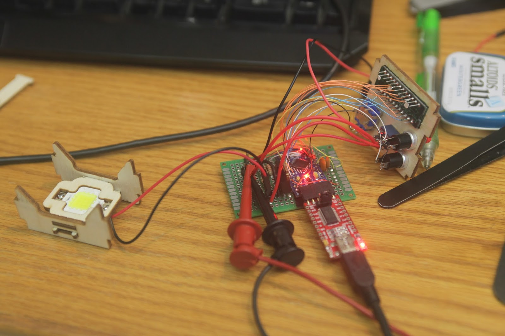 |
| Circuit board |
{kind=link}
| 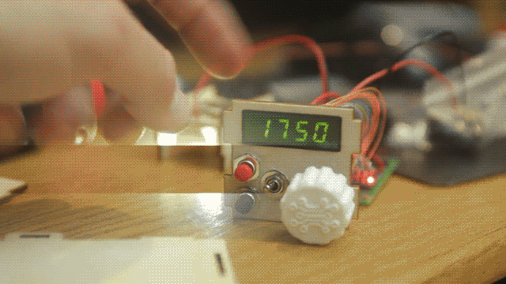 |
| Encoder noise |
{kind=link}
This is really stupid fix for a really stupid problem. The simple explanation is the microprocessor needs to be on to keep the LED off. When power is cut, the energy in the capacitors keeps everything running for a short while. If the 5v for the Arduino dies before the 20v of the LED, the mosfet will turn on and dump the remaining energy which is probably enough to destroy the LED. Instead of buying the right transistors, I wired the LED power through the toggle switch. The large current pulsing through those wires induces current in the surrounding wires. One of those wires is connected to an external interrupt on the Arduino which responds very quickly to changes in voltage.
Twisting the wires didn't help. Shielding the wires didn't help. I ended up putting a large capacitor next to the mosfet with a 5k bleed resistor and a large capacitor on the Arduino 5v supply. This is a dirty hack which fixed the problem.
When the stroboscope is turned off, the bleed resistor begins draining the capacitor, and the Arduino stays on longer due to the other capacitor. By the time the Arduino runs out of power, the other capacitor has been drained enough to not damage the LED.
| 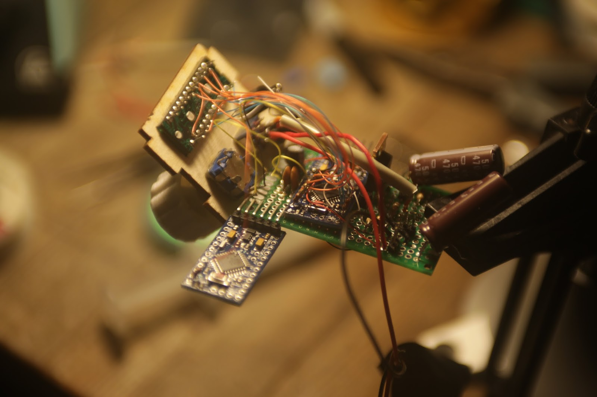 |
| Engine swap |
{kind=link}
| 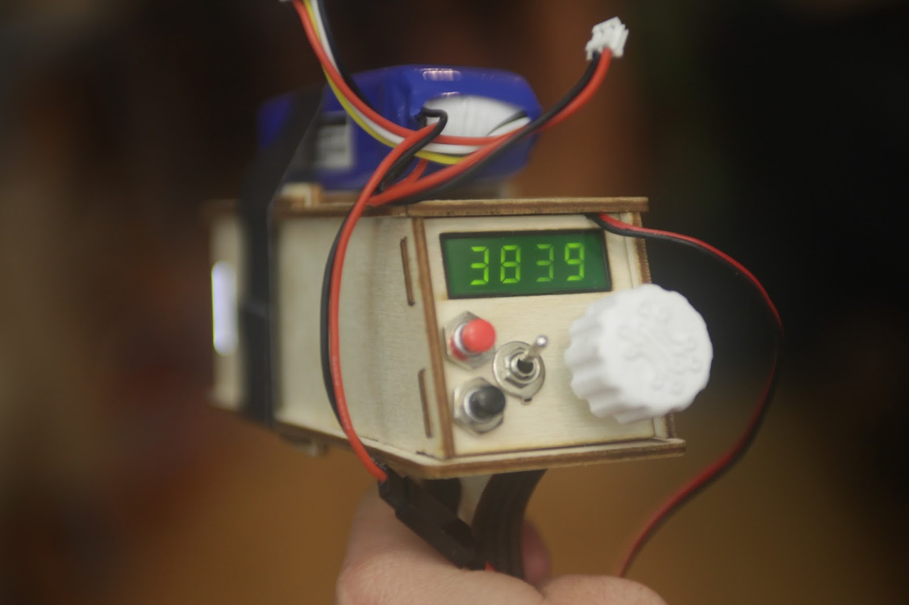 |
| Finished stroboscope prototype |
{kind=link}
| 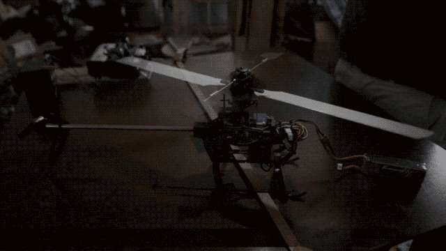 |
| Helicopter harmonics |
{kind=link}
If this wikipedia gif isn't enough, watch the overview video; I try to explain it with some animations.
{kind=link}
Conclusion
Large instantaneous currents through long wires is bad.
Rolling shutter + strobes = banding.
Stroboscopes are dope.
The end
I'm out of words.
xDD nice work, and be carefull to not overdaylight the LED
ReplyDeleteThis comment has been removed by the author.
ReplyDelete